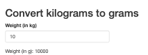
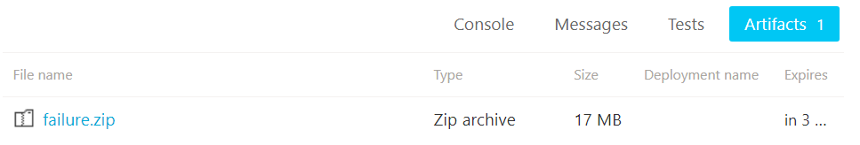

Introduction to Snapshot Testing in R
Indrajeet Patil

Unit testing
The goal of a unit test is to capture the expected output of a function using code and making sure that actual output after any changes matches the expected output.
{testthat} is a popular framework for writing unit tests in R.
Benefits of unit testing
- insures against unintentionally changing function behaviour
- prevents re-introducing already fixed bugs
- acts as the most basic form of developer-focused documentation
- catches breaking changes coming from upstream dependencies
- etc.
Test output
Test pass only when actual function behaviour matches expected.
| actual | expected | tests |
|---|---|---|
Unit testing with {testthat}: A recap
Test organization
Testing infrastructure for R package has the following hierarchy:
| Component | Role |
|---|---|
|
Test file |
Tests for R/foo.R will typically be in tests/testthat/test-foo.R. |
| Tests | A single file can contain multiple tests. |
|
Expectations |
A single test can have multiple expectations. |
Example test file
Every test is a call to
testthat::test_that()function.Every expectation is represented by
testthat::expect_*()function.You can generate a test file using
usethis::use_test()function.
What is different about snapshot testing?
A unit test records the code to describe expected output.
(actual) (expected)
A snapshot test records expected output in a separate, human-readable file.
(actual) (expected)
Why do you need snapshot testing?
If you develop R packages and have struggled to
- test that text output prints as expected
- test that an entire file is as expected
- test that generated graphical output looks as expected
- update such tests en masse
then you should be excited to know more about snapshot tests (aka golden tests)! 🤩
Prerequisites
Familiarity with writing unit tests using {testthat}.
If not, have a look at this chapter from R Packages book.
Testing text outputs
Snapshot tests can be used to test that text output prints as expected.
Important for testing functions that pretty-print R objects to the console, create elegant and informative exceptions, etc.
Example function
Let’s say you want to write a unit test for the following function:
Source code
Note that you want to test that the printed output looks as expected.
Therefore, you need to check for all the little bells and whistles in the printed output.
Example test
Even testing this simple function is a bit painful because you need to keep track of every escape character, every space, etc.
test_that("`print_movies()` prints as expected", {
expect_equal(
print_movies(
c("Title", "Director"),
c("Salaam Bombay!", "Mira Nair")
),
"Movie: \n Title: Salaam Bombay!\n Director: Mira Nair"
)
})Test passed 🥇With a more complex code, it’d be impossible for a human to reason about what the output is supposed to look like.
Important
If this is a utility function used by many other functions, changing its behaviour would entail manually changing expected outputs for many tests.
This is not maintainable! 😩
Alternative: Snapshot test
Instead, you can use expect_snapshot(), which, when run for the first time, generates a Markdown file with expected/reference output.
test_that("`print_movies()` prints as expected", {
local_edition(3)
expect_snapshot(cat(print_movies(
c("Title", "Director"),
c("Salaam Bombay!", "Mira Nair")
)))
})── Warning: `print_movies()` prints as expected ────────────────────────────────
Adding new snapshot:
Code
cat(print_movies(c("Title", "Director"), c("Salaam Bombay!", "Mira Nair")))
Output
Movie:
Title: Salaam Bombay!
Director: Mira NairWarning
The first time a snapshot is created, it becomes the truth against which future function behaviour will be compared.
Thus, it is crucial that you carefully check that the output is indeed as expected. 🔎
Human-readable Markdown file
Compared to your unit test code representing the expected output
notice how much more human-friendly the Markdown output is!
Code
cat(print_movies(c("Title", "Director"), c("Salaam Bombay!", "Mira Nair")))
Output
Movie:
Title: Salaam Bombay!
Director: Mira NairIt is easy to see what the printed text output is supposed to look like. In other words, snapshot tests are useful when the intent of the code can only be verified by a human.
More about snapshot Markdown files
If test file is called
test-foo.R, the snapshot will be saved totest/testthat/_snaps/foo.md.If there are multiple snapshot tests in a single file, corresponding snapshots will also share the same
.mdfile.By default,
expect_snapshot()will capture the code, the object values, and any side-effects.
What test success looks like
If you run the test again, it’ll succeed:
test_that("`print_movies()` prints as expected", {
local_edition(3)
expect_snapshot(cat(print_movies(
c("Title", "Director"),
c("Salaam Bombay!", "Mira Nair")
)))
})Test passed 🥳Why does my test fail on a re-run?
If testing a snapshot you just generated fails on re-running the test, this is most likely because your test is not deterministic. For example, if your function deals with random number generation.
In such cases, setting a seed (e.g. set.seed(42)) should help.
What test failure looks like
When function changes, snapshot doesn’t match the reference, and the test fails:
Changes to function
print_movies <- function(keys, values) {
paste0(
"Movie: \n",
paste0(
" ", keys, "- ", values,
collapse = "\n"
)
)
}Failure message provides expected (-) vs observed (+) diff.
Test failure
test_that("`print_movies()` prints as expected", {
expect_snapshot(cat(print_movies(
c("Title", "Director"),
c("Salaam Bombay!", "Mira Nair")
)))
})── Failure: `print_movies()` prints as expected ────────────────────────────────
Snapshot of code has changed:
old[2:6] vs new[2:6]
cat(print_movies(c("Title", "Director"), c("Salaam Bombay!", "Mira Nair")))
Output
Movie:
- Title: Salaam Bombay!
+ Title- Salaam Bombay!
- Director: Mira Nair
+ Director- Mira Nair
* Run `testthat::snapshot_accept('slides.qmd')` to accept the change.
* Run `testthat::snapshot_review('slides.qmd')` to interactively review the change.Error:
! Test failedFixing tests
Message accompanying failed tests make it explicit how to fix them.
- If the change was deliberate, you can accept the new snapshot as the current truth.
- If this was unexpected, you can review the changes, and decide whether to change the snapshot or to correct the function behaviour instead.
Fixing multiple snapshot tests
If this is a utility function used by many other functions, changing its behaviour would lead to failure of many tests.
You can update all new snapshots with snapshot_accept(). And, of course, check the diffs to make sure that the changes are expected.
Capturing messages and warnings
So far you have tested text output printed to the console, but you can also use snapshots to capture messages, warnings, and errors.
message
Tip
Snapshot records both the condition and the corresponding message.
You can now rest assured that the users are getting informed the way you want! 😌
Capturing errors
In case of an error, the function expect_snapshot() itself will produce an error. You have two ways around this:
Option-1 (recommended)
── Warning: `log()` errors ─────────────────────────────────────────────────────
Adding new snapshot:
Code
log("x")
Condition
Error in `log()`:
! non-numeric argument to mathematical functionWhich option should I use?
If you want to capture both the code and the error message, use
expect_snapshot(..., error = TRUE).If you want to capture only the error message, use
expect_snapshot_error().
Further reading
testthat article on snapshot testing
Introduction to golden testing
Docs for Jest library in JavaScript, which inspired snapshot testing implementation in testthat
Testing graphical outputs
To create graphical expectations, you will use testthat extension package: {vdiffr}.
How does {vdiffr} work?
vdiffr introduces expect_doppelganger() to generate testthat expectations for graphics. It does this by writing SVG snapshot files for outputs!
The figure to test can be:
- a
ggplotobject (fromggplot2::ggplot()) - a
recordedplotobject (fromgrDevices::recordPlot()) - any object with a
print()method
Note
If test file is called
test-foo.R, the snapshot will be saved totest/testthat/_snaps/foofolder.In this folder, there will be one
.svgfile for every test intest-foo.R.The name for the
.svgfile will be sanitized version oftitleargument toexpect_doppelganger().
Example function
Let’s say you want to write a unit test for the following function:
Source code
Note that you want to test that the graphical output looks as expected, and this expectation is difficult to capture with a unit test.
Graphical snapshot test
You can use expect_doppelganger() from vdiffr to test this!
The first time you run the test, it’d generate an .svg file with expected output.
Warning
The first time a snapshot is created, it becomes the truth against which future function behaviour will be compared.
Thus, it is crucial that you carefully check that the output is indeed as expected. 🔎
You can open .svg snapshot files in a web browser for closer inspection.
What test success looks like
If you run the test again, it’ll succeed:
What test failure looks like
When function changes, snapshot doesn’t match the reference, and the test fails:
Changes to function
Test failure
test_that("`create_scatter()` plots as expected", {
local_edition(3)
expect_doppelganger(
title = "create scatter",
fig = create_scatter(),
)
})
── Failure ('<text>:3'): `create_scatter()` plots as expected ──────────────────
Snapshot of `testcase` to 'slides.qmd/create-scatter.svg' has changed
Run `testthat::snapshot_review('slides.qmd/')` to review changes
Backtrace:
1. vdiffr::expect_doppelganger(...)
3. testthat::expect_snapshot_file(...)
Error in `reporter$stop_if_needed()`:
! Test failedFixing tests
Running snapshot_review() launches a Shiny app which can be used to either accept or reject the new output(s).
Why are my snapshots for plots failing?! 😔
If tests fail even if the function didn’t change, it can be due to any of the following reasons:
- R’s graphics engine changed
- ggplot2 itself changed
- non-deterministic behaviour
- changes in system libraries
For these reasons, snapshot tests for plots tend to be fragile and are not run on CRAN machines by default.
Further reading
Testing entire files
Whole file snapshot testing makes sure that media, data frames, text files, etc. are as expected.
Writing test
Let’s say you want to test JSON files generated by jsonlite::write_json().
Test
# File: tests/testthat/test-write-json.R
test_that("json writer works", {
local_edition(3)
r_to_json <- function(x) {
path <- tempfile(fileext = ".json")
jsonlite::write_json(x, path)
path
}
x <- list(1, list("x" = "a"))
expect_snapshot_file(r_to_json(x), "demo.json")
})── Warning: json writer works ──────────────────────────────────────────────────
Adding new file snapshot: 'tests/testthat/_snaps/demo.json'Snapshot
Note
To snapshot a file, you need to write a helper function that provides its path.
If a test file is called
test-foo.R, the snapshot will be saved totest/testthat/_snaps/foofolder.In this folder, there will be one file (e.g.
.json) for everyexpect_snapshot_file()expectation intest-foo.R.The name for snapshot file is taken from
nameargument toexpect_snapshot_file().
What test success looks like
If you run the test again, it’ll succeed:
What test failure looks like
If the new output doesn’t match the expected one, the test will fail:
# File: tests/testthat/test-write-json.R
test_that("json writer works", {
local_edition(3)
r_to_json <- function(x) {
path <- tempfile(fileext = ".json")
jsonlite::write_json(x, path)
path
}
x <- list(1, list("x" = "b"))
expect_snapshot_file(r_to_json(x), "demo.json")
})── Failure: json writer works ──────────────────────────────────────────────────
Snapshot of `r_to_json(x)` to 'slides.qmd/demo.json' has changed
Run `testthat::snapshot_review('slides.qmd/')` to review changesError:
! Test failedFixing tests
Running snapshot_review() launches a Shiny app which can be used to either accept or reject the new output(s).
Further reading
Documentation for expect_snapshot_file()
Testing Shiny applications
To write formal tests for Shiny applications, you will use testthat extension package: {shinytest2}.
How does {shinytest2} work?
shinytest2 uses a Shiny app (how meta! 😅) to record user interactions with the app and generate snapshots of the application’s state. Future behaviour of the app will be compared against these snapshots to check for any changes.
Exactly how tests for Shiny apps in R package are written depends on how the app is stored. There are two possibilities, and you will discuss them both separately.
Stored in /inst folder
├── DESCRIPTION
├── R
├── inst
│ └── sample_app
│ └── app.RReturned by a function
├── DESCRIPTION
├── R
│ └── app-function.RShiny app in subdirectory
├── DESCRIPTION
├── R
├── inst
│ └── sample_app
│ └── app.RExample app
Let’s say this app resides in the inst/unitConverter/app.R file.
Generating a test
To create a snapshot test, go to the app directory and run record_test().
Auto-generated artifacts
Test
Snapshot

Note
record_test()will auto-generate a test file in the app directory. The test script will be saved in a subdirectory of the app (inst/my-app/tests/testthat/test-shinytest2.R).There will be one
/testsfolder inside every app folder.The snapshots are saved as
.pngfile intests/testthat/test-shinytest2/_snaps/{.variant}/shinytest2. The{.variant}here corresponds to operating system and R version used to record tests. For example,_snaps/windows-4.1/shinytest2.
Creating a driver script
Note that currently your test scripts and results are in the /inst folder, but you’d also want to run these tests automatically using testthat.
For this, you will need to write a driver script like the following:
library(shinytest2)
test_that("`unitConverter` app works", {
appdir <- system.file(package = "package_name", "unitConverter")
test_app(appdir)
})Now the Shiny apps will be tested with the rest of the source code in the package! 🎊
Tip
You save the driver test in the /tests folder (tests/testthat/test-inst-apps.R), alongside other tests.
What test failure looks like
Let’s say, while updating the app, you make a mistake, which leads to a failed test.
Changed code with mistake
ui <- fluidPage(
titlePanel("Convert kilograms to grams"),
numericInput("kg", "Weight (in kg)", value = 0),
textOutput("g")
)
server <- function(input, output, session) {
output$g <- renderText(
paste0("Weight (in kg): ", input$kg * 1000) # should be `"Weight (in g): "`
)
}
shinyApp(ui, server)Test failure JSON diff
Updating snapshots
Fixing this test will be similar to fixing any other snapshot test you’ve seen thus far.
{testthat2} provides a Shiny app for comparing the old and new snapshots.
Function returns Shiny app
├── DESCRIPTION
├── R
│ └── app-function.RExample app and test
The only difference in testing workflow when Shiny app objects are created by functions is that you will write the test ourselves, instead of shinytest2 auto-generating it.
Source code
# File: R/unit-converter.R
unitConverter <- function() {
ui <- fluidPage(
titlePanel("Convert kilograms to grams"),
numericInput("kg", "Weight (in kg)", value = 0),
textOutput("g")
)
server <- function(input, output, session) {
output$g <- renderText(
paste0("Weight (in g): ", input$kg * 1000)
)
}
shinyApp(ui, server)
}Generating test and snapshots
you call record_test() directly on a Shiny app object, copy-paste commands to the test script, and run devtools::test_active_file() to generate snapshots.
Testing apps from frameworks
This testing workflow is also relevant for app frameworks (e.g. {golem}, {rhino}, etc.).
Function in run_app.R returns app.
├── DESCRIPTION
├── NAMESPACE
├── R
│ ├── app_config.R
│ ├── app_server.R
│ ├── app_ui.R
│ └── run_app.R Function in app.R returns app.
├── app
│ ├── js
│ │ └── index.js
│ ├── logic
│ │ └── __init__.R
│ ├── static
│ │ └── favicon.ico
│ ├── styles
│ │ └── main.scss
│ ├── view
│ │ └── __init__.R
│ └── main.R
├── tests
│ ├── ...
├── app.R
├── RhinoApplication.Rproj
├── dependencies.R
├── renv.lock
└── rhino.ymlFinal directory structure
The final location of the tests and snapshots should look like the following for the two possible ways Shiny apps are included in R packages.
Stored in /inst folder
├── DESCRIPTION
├── R
├── inst
│ └── sample_app
│ ├── app.R
│ └── tests
│ ├── testthat
│ │ ├── _snaps
│ │ │ └── shinytest2
│ │ │ └── 001.json
│ │ └── test-shinytest2.R
│ └── testthat.R
└── tests
├── testthat
│ └── test-inst-apps.R
└── testthat.RReturned by a function
├── DESCRIPTION
├── R
│ └── app-function.R
└── tests
├── testthat
│ ├── _snaps
│ │ └── app-function
│ │ └── 001.json
│ └── test-app-function.R
└── testthat.RTesting multiple apps
For the sake of completeness, here is what the test directory structure would like when there are multiple apps in a single package.
Stored in /inst folder
├── DESCRIPTION
├── R
├── inst
│ └── sample_app1
│ ├── app.R
│ └── tests
│ ├── testthat
│ │ ├── _snaps
│ │ │ └── shinytest2
│ │ │ └── 001.json
│ │ └── test-shinytest2.R
│ └── testthat.R
│ └── sample_app2
│ ├── app.R
│ └── tests
│ ├── testthat
│ │ ├── _snaps
│ │ │ └── shinytest2
│ │ │ └── 001.json
│ │ └── test-shinytest2.R
│ └── testthat.R
└── tests
├── testthat
│ └── test-inst-apps.R
└── testthat.RReturned by a function
├── DESCRIPTION
├── R
│ └── app-function1.R
│ └── app-function2.R
└── tests
├── testthat
│ ├── _snaps
│ │ └── app-function1
│ │ └── 001.json
│ │ └── app-function2
│ │ └── 001.json
│ └── test-app-function1.R
│ └── test-app-function2.R
└── testthat.RAdvanced topics
The following are some advanced topics that are beyond the scope of the current presentation, but you may wish to know more about.
Extra
If you want to test Shiny apps with continuous integration using shinytest2, read this article.
shinytest2 is a successor to shinytest package. If you want to migrate from the latter to the former, have a look at this.
Further reading
Testing chapter from Mastering Shiny book
shinytest2 article introducing its workflow
shinytest2 article on how to test apps in R packages
Headaches
It’s not all kittens and roses when it comes to snapshot testing.
Let’s see some issues you might run into while using them. 🤕
Testing behavior that you don’t own
Let’s say you write a graphical snapshot test for a function that produces a ggplot object. If ggplot2 authors make some modifications to this object, your tests will fail, even though your function works as expected!
In other words, your tests are now at the mercy of other package authors because snapshots are capturing things beyond your package’s control.
Caution
Tests that fail for reasons other than what they are testing for are problematic. Thus, be careful about what you snapshot and keep in mind the maintenance burden that comes with dependencies with volatile APIs.
Note
A way to reduce the burden of keeping snapshots up-to-date is to automate this process. But there is no free lunch in this universe, and now you need to maintain this automation! 🤷
Failures in non-interactive environments
If snapshots fail locally, you can just run snapshot_review(), but what if they fail in non-interactive environments (on CI/CD platforms, during R CMD Check, etc.)?
The easiest solution is to copy the new snapshots to the local folder and run snapshot_review().
Tip
If expected snapshot is called (e.g.) foo.svg, there will be a new snapshot file foo.new.svg in the same folder when the test fails.
snapshot_review() compares these files to reveal how the outputs have changed.
But where can you find the new snapshots?
Accessing new snapshots
In local R CMD Check, you can find new snapshots in .Rcheck folder:
On CI/CD platforms, you can find snapshots in artifacts folder:
Code review with snapshot tests
Despite snapshot tests making the expected outputs more human-readable, given a big enough change and complex enough output, sometimes it can be challenging to review changes to snapshots.
How do you review pull requests with complex snapshots changes?
Danger of silent failures
Given their fragile nature, snapshot tests are skipped on CRAN by default.
Although this makes sense, it means that you miss out on anything but a breaking change from upstream dependency. E.g., if ggplot2 (hypothetically) changes how the points look, you won’t know about this change until you happen to run your snapshot tests again locally or on CI/CD.
Unit tests run on CRAN, on the other hand, will fail and you will be immediately informed about it.
Tip
A way to insure against such silent failures is to run tests daily on CI/CD platforms (e.g. AppVeyor nightly builds).
Parting wisdom
What not to do
Don’t use snapshot tests for everything
It is tempting to use them everywhere out of laziness. But they are sometimes inappropriate (e.g. when testing requires external benchmarking).
Let’s say you write a function to extract estimates from a regression model.
Its test should compare results against an external benchmark, and not a snapshot.
Snapshot for humans, not machines
Snapshot testing is appropriate when the human needs to be in the loop to make sure that things are working as expected. Therefore, the snapshots should be human readable.
E.g. if you write a function that plots something:
To test it, you should snapshot the plot, and not the underlying data, which is hard to make sense of for a human.
Don’t blindly accept snapshot changes
Resist formation of such a habit.
testthat provides tools to make it very easy to review changes, so no excuses!
Self-study
In this presentation, you deliberately kept the examples and the tests simple.
To see a more realistic usage of snapshot tests, you can study open-source test suites.
Suggested repositories
Print outputs
Visualizations
Shiny apps
Activities
If you feel confident enough to contribute to open-source projects to practice these skills, here are some options.
Practice makes it perfect
These are only suggestions. Feel free to contribute to any project you like! 🤝
Suggestions
See if ggplot2 extensions you like use snapshot tests for graphics. If not, you can add them for key functions.
Check out hard reverse dependencies of
{shiny}, and add snapshot tests using shinytest2 to an app of your liking.Add more vdiffr snapshot tests to plotting functions in
{see}, a library for statistical visualizations (I can chaperone your PRs here).shinytest2 is the successor to shinytest package. Check out which packages currently use it for testing Shiny apps, and see if you can use shinytest2 instead (see how-to here).
General reading
Although current presentation is focused only on snapshot testing, here is reading material on automated testing in general.
McConnell, S. (2004). Code Complete. Microsoft Press. (pp. 499-533)
Boswell, D., & Foucher, T. (2011). The Art of Readable Code. O’Reilly Media, Inc. (pp. 149-162)
Riccomini, C., & Ryaboy D. (2021). The Missing Readme. No Starch Press. (pp. 89-108)
Martin, R. C. (2009). Clean Code. Pearson Education. (pp. 121-133)
Fowler, M. (2018). Refactoring. Addison-Wesley Professional. (pp. 85-100)
Beck, K. (2003). Test-Driven Development. Addison-Wesley Professional.
Additional resources
For a comprehensive collection of packages for unit testing in R, see this page.
For more
If you are interested in good programming and software development practices, check out my other slide decks.
Find me at…
Thank You
And Happy Snapshotting! 😊
Session information
[1] '1.6.32'─ Session info ───────────────────────────────────────────────────────────────
setting value
version R version 4.4.1 (2024-06-14)
os Ubuntu 22.04.5 LTS
system x86_64, linux-gnu
hostname fv-az1771-323
ui X11
language (EN)
collate C.UTF-8
ctype C.UTF-8
tz UTC
date 2024-10-30
pandoc 3.5 @ /opt/hostedtoolcache/pandoc/3.5/x64/ (via rmarkdown)
quarto 1.6.32 @ /usr/local/bin/quarto
─ Packages ───────────────────────────────────────────────────────────────────
package * version date (UTC) lib source
base * 4.4.1 2024-08-22 [3] local
brio 1.1.5 2024-04-24 [1] RSPM
cli 3.6.3 2024-06-21 [1] RSPM
colorspace 2.1-1 2024-07-26 [1] RSPM
compiler 4.4.1 2024-08-22 [3] local
crayon 1.5.3 2024-06-20 [1] RSPM
datasets * 4.4.1 2024-08-22 [3] local
desc 1.4.3 2023-12-10 [1] RSPM
diffobj 0.3.5 2021-10-05 [1] RSPM
digest 0.6.37 2024-08-19 [1] RSPM
evaluate 1.0.1 2024-10-10 [1] RSPM
fansi 1.0.6 2023-12-08 [1] RSPM
farver 2.1.2 2024-05-13 [1] RSPM
fastmap 1.2.0 2024-05-15 [1] RSPM
ggplot2 * 3.5.1 2024-04-23 [1] RSPM
glue 1.8.0 2024-09-30 [1] RSPM
graphics * 4.4.1 2024-08-22 [3] local
grDevices * 4.4.1 2024-08-22 [3] local
grid 4.4.1 2024-08-22 [3] local
gtable 0.3.6 2024-10-25 [1] RSPM
htmltools 0.5.8.1 2024-04-04 [1] RSPM
jsonlite 1.8.9 2024-09-20 [1] RSPM
knitr 1.48 2024-07-07 [1] RSPM
labeling 0.4.3 2023-08-29 [1] RSPM
later 1.3.2 2023-12-06 [1] RSPM
lattice 0.22-6 2024-03-20 [3] CRAN (R 4.4.1)
lifecycle 1.0.4 2023-11-07 [1] RSPM
magrittr 2.0.3 2022-03-30 [1] RSPM
Matrix 1.7-1 2024-10-18 [1] RSPM
methods * 4.4.1 2024-08-22 [3] local
mgcv 1.9-1 2023-12-21 [3] CRAN (R 4.4.1)
munsell 0.5.1 2024-04-01 [1] RSPM
nlme 3.1-166 2024-08-14 [1] RSPM
pillar 1.9.0 2023-03-22 [1] RSPM
pkgconfig 2.0.3 2019-09-22 [1] RSPM
pkgload 1.4.0 2024-06-28 [1] RSPM
png 0.1-8 2022-11-29 [1] RSPM
processx 3.8.4 2024-03-16 [1] RSPM
ps 1.8.1 2024-10-28 [1] RSPM
quarto 1.4.4.9003 2024-09-22 [1] Github (quarto-dev/quarto-r@0fcb998)
R6 2.5.1 2021-08-19 [1] RSPM
Rcpp 1.0.13 2024-07-17 [1] RSPM
rematch2 2.1.2 2020-05-01 [1] RSPM
rlang 1.1.4 2024-06-04 [1] RSPM
rmarkdown 2.28 2024-08-17 [1] RSPM
rprojroot 2.0.4 2023-11-05 [1] RSPM
rstudioapi 0.17.1 2024-10-22 [1] RSPM
scales 1.3.0 2023-11-28 [1] RSPM
sessioninfo 1.2.2.9000 2024-10-13 [1] Github (r-lib/sessioninfo@37c81af)
splines 4.4.1 2024-08-22 [3] local
stats * 4.4.1 2024-08-22 [3] local
testthat * 3.2.1.1 2024-04-14 [1] RSPM
tibble 3.2.1 2023-03-20 [1] RSPM
tools 4.4.1 2024-08-22 [3] local
utf8 1.2.4 2023-10-22 [1] RSPM
utils * 4.4.1 2024-08-22 [3] local
vctrs 0.6.5 2023-12-01 [1] RSPM
vdiffr * 1.0.7 2023-09-22 [1] RSPM
waldo 0.5.3 2024-08-23 [1] RSPM
withr 3.0.2 2024-10-28 [1] RSPM
xfun 0.48 2024-10-03 [1] RSPM
yaml 2.3.10 2024-07-26 [1] RSPM
[1] /home/runner/work/_temp/Library
[2] /opt/R/4.4.1/lib/R/site-library
[3] /opt/R/4.4.1/lib/R/library
* ── Packages attached to the search path.
──────────────────────────────────────────────────────────────────────────────Source code for these slides can be found on GitHub.